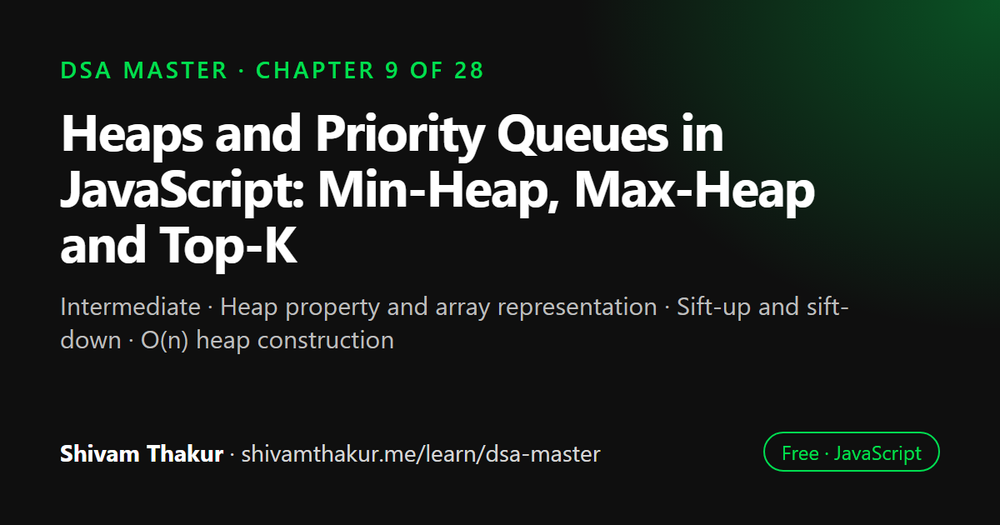

Chapter 9 of 28 · Intermediate
Heaps and Priority Queues in JavaScript: Min-Heap, Max-Heap and Top-K
Heaps & Priority Queues — Always Knowing What Matters Most

A heap is a complete binary tree stored in an array where every parent is smaller (min-heap) or larger (max-heap) than its children, so the minimum or maximum is always at the top. This chapter builds a generic heap in JavaScript, explains sift-up, sift-down and O(n) heapify, and covers the Top-K and two-heap median patterns.
In this chapter you will learn
- Heap property and array representation
- Sift-up and sift-down
- O(n) heap construction
- Building a priority queue in JavaScript
- Top-K and median-of-stream patterns
9.0 The Problem Heaps Solve
Every structure so far answers a specific access question. Arrays: "give me index i." Hash tables: "give me the value for this key." BSTs: "give me things in sorted order." Here's a new, extremely common question none of them answer efficiently: "give me the smallest (or largest) item, repeatedly, while items keep being added."
You could sort the whole collection every time (O(n log n) per operation — wasteful) or scan for the min/max every time (O(n) per operation — still wasteful if this happens often). A heap answers "what's the minimum/maximum right now?" in O(1), and "remove it and give me the next one" in O(log n) — a dramatically better fit for this exact access pattern.
Real-Life Analogy: The Hospital Emergency Room
An ER doesn't treat patients in the order they arrived (that would be a plain Chapter 6 queue — FIFO). It treats the most critical patient next, regardless of arrival order. As new patients arrive, they're slotted in according to severity, and the front desk always knows, instantly, who's most critical right now, without re-examining every patient in the waiting room each time. This "always instantly know the highest-priority item, cheaply insert new items, cheaply remove the top item" behavior is exactly a priority queue, and a heap is the data structure that implements it efficiently.
9.1 What Is a Heap?
Definition: A heap is a complete binary tree that satisfies the heap property: in a min-heap, every parent node is less than or equal to its children; in a max-heap, every parent node is greater than or equal to its children.
ASCII Visualization: A Valid Min-Heap
3
/ \
7 5
/ \ /
10 9 8
Check the heap property: every parent <= both children.
3 <= 7 ✓, 3 <= 5 ✓, 7 <= 10 ✓, 7 <= 9 ✓, 5 <= 8 ✓
Notice: 7's children (10, 9) are BOTH larger than 5 (7's sibling subtree's root)!
This would be ILLEGAL in a BST (7 > 5 would require 7 to be in 5's right subtree,
not a sibling), but it's perfectly fine in a heap — heaps only constrain
parent-child relationships, never sibling relationships or subtree ordering.9.2 The Array Representation (Why Heaps Don't Need Node/Pointer Objects)
Here is the single most important practical fact in this chapter: a heap, despite being conceptually a tree, is virtually always implemented using a plain array, not TreeNode objects with left/right pointers. This works because a heap is always a complete binary tree (every level fully filled except possibly the last, which fills left to right) — and complete binary trees have a beautifully simple mathematical relationship between a node's position and its children's positions.
ASCII Visualization: Tree Shape vs. Array Layout
Tree view:
3 <- index 0
/ \
7 5 <- indices 1, 2
/ \ /
10 9 8 <- indices 3, 4, 5
Array view:
Index: 0 1 2 3 4 5
[3, 7, 5, 10, 9, 8]
Verify: node at index 1 (value 7) has children at 2*1+1=3 (value 10) and 2*1+2=4 (value 9). ✓
node at index 4 (value 9) has parent at floor((4-1)/2)=1 (value 7). ✓9.3 Building a Min-Heap From Scratch
9.3.1 The Two Core Operations: sift-up and sift-down
Every heap operation reduces to one of two "repair" procedures that restore the heap property after it's been locally violated:
- Sift-up (also called "bubble-up" or "heapify-up"): used after inserting a new element at the end of the array — the new element may be smaller than its parent (violating the min-heap property), so we repeatedly swap it upward until it finds its correct resting place.
- Sift-down (also called "bubble-down" or "heapify-down"): used after removing the root — we move the last element into the root position (to keep the tree complete), and it's likely too large to be there, so we repeatedly swap it downward with its smaller child until the heap property is restored.
class MinHeap {
#heap = [];
#parentIndex(i) {
return Math.floor((i - 1) / 2);
}
#leftChildIndex(i) {
return 2 * i + 1;
}
#rightChildIndex(i) {
return 2 * i + 2;
}
#swap(i, j) {
[this.#heap[i], this.#heap[j]] = [this.#heap[j], this.#heap[i]];
}
peek() {
if (this.#heap.length === 0) throw new Error('Heap is empty');
return this.#heap[0]; // the minimum is ALWAYS at the root, index 0 — O(1)!
}
get size() {
return this.#heap.length;
}
insert(value) {
this.#heap.push(value); // Step 1: add to the end (keeps tree "complete")
this.#siftUp(this.#heap.length - 1); // Step 2: restore heap property upward
}
#siftUp(index) {
while (index > 0) {
const parentIdx = this.#parentIndex(index);
if (this.#heap[index] >= this.#heap[parentIdx]) {
break; // heap property already satisfied here — stop early!
}
this.#swap(index, parentIdx);
index = parentIdx; // continue checking from the new position
}
}
// Time: O(log n) — at most, we travel from a leaf to the root, and tree
// height is O(log n) for a complete binary tree (ALWAYS balanced by
// construction — no degenerate case exists for a complete tree!)
extractMin() {
if (this.#heap.length === 0) throw new Error('Heap is empty');
const min = this.#heap[0];
const last = this.#heap.pop(); // remove the LAST element (O(1) — Chapter 3!)
if (this.#heap.length > 0) {
this.#heap[0] = last; // move it to the root
this.#siftDown(0); // restore heap property downward
}
return min;
}
#siftDown(index) {
const n = this.#heap.length;
while (true) {
const left = this.#leftChildIndex(index);
const right = this.#rightChildIndex(index);
let smallest = index;
if (left < n && this.#heap[left] < this.#heap[smallest]) {
smallest = left;
}
if (right < n && this.#heap[right] < this.#heap[smallest]) {
smallest = right;
}
if (smallest === index) {
break; // heap property satisfied — no smaller child to swap with
}
this.#swap(index, smallest);
index = smallest;
}
}
// Time: O(log n) — same reasoning as siftUp, bounded by tree height
}Dry Run: Inserting Into a Min-Heap
Start: heap = [3, 7, 5, 10, 9, 8]
insert(1):
Step 1: push -> heap = [3, 7, 5, 10, 9, 8, 1] (1 is at index 6)
Step 2: siftUp(6):
parent of 6 = floor((6-1)/2) = 2, heap[2]=5. Is 1 < 5? YES -> swap
heap = [3, 7, 1, 10, 9, 8, 5] (1 now at index 2)
parent of 2 = floor((2-1)/2) = 0, heap[0]=3. Is 1 < 3? YES -> swap
heap = [1, 7, 3, 10, 9, 8, 5] (1 now at index 0)
index=0, loop condition (index > 0) fails -> STOP
Final: heap = [1, 7, 3, 10, 9, 8, 5] -- 1 correctly bubbled all the way to the root!Dry Run: Extracting the Minimum
Start: heap = [1, 7, 3, 10, 9, 8, 5]
extractMin():
min = heap[0] = 1 (this is what we'll return)
last = heap.pop() = 5 -> heap = [1, 7, 3, 10, 9, 8] (5 removed from the end)
heap[0] = 5 -> heap = [5, 7, 3, 10, 9, 8] (5 moved to the root)
siftDown(0):
left=1(val 7), right=2(val 3). smallest so far = 0(val 5).
Is 7 < 5? No. Is 3 < 5? YES -> smallest = 2
swap(0, 2) -> heap = [3, 7, 5, 10, 9, 8]
index = 2
left=2*2+1=5(val 8), right=2*2+2=6(out of bounds, n=6). smallest so far = 2(val 5)
Is 8 < 5? No. -> smallest stays 2 -> STOP
Final heap: [3, 7, 5, 10, 9, 8] Returned value: 1 (correctly the minimum!)9.4 Building a Heap From an Existing Array: The Surprising O(n) Result
The problem: given an unordered array of n elements, convert it into a valid heap, in place.
Naive approach — insert elements one at a time:
function buildHeapNaive(arr) {
const heap = new MinHeap();
for (const value of arr) {
heap.insert(value); // O(log n) each
}
return heap;
}
// Time: O(n log n) — n insertions, each O(log n)Optimized — "heapify" from the bottom up:
function heapify(arr) {
const n = arr.length;
// Start from the LAST parent node, and sift down each node moving toward the root.
// Leaf nodes (indices >= n/2) trivially already satisfy the heap property alone.
for (let i = Math.floor(n / 2) - 1; i >= 0; i--) {
siftDownInArray(arr, i, n);
}
return arr;
}
function siftDownInArray(arr, index, n) {
while (true) {
const left = 2 * index + 1;
const right = 2 * index + 2;
let smallest = index;
if (left < n && arr[left] < arr[smallest]) smallest = left;
if (right < n && arr[right] < arr[smallest]) smallest = right;
if (smallest === index) break;
[arr[index], arr[smallest]] = [arr[smallest], arr[index]];
index = smallest;
}
}
console.log(heapify([9, 4, 7, 1, -2, 6, 5]));9.5 Heap Sort: A Direct Application (Full Treatment in the Sorting Chapter)
Since we can heapify an array in O(n) and extractMin/extractMax in O(log n), a natural sorting algorithm falls out immediately: build a heap, then repeatedly extract the min (or max) into a result array.
function heapSort(arr) {
const heap = heapify([...arr]); // O(n) — build a max-heap for ascending output
// (using max-heap logic; shown conceptually here)
const result = [];
// Conceptually: repeatedly extract the max and place it at the end
// (Full, precise implementation deferred to the dedicated Sorting Masterclass chapter,
// where heap sort is treated alongside merge sort, quick sort, and others for direct
// side-by-side comparison.)
return result;
}- Time: O(n) to heapify + O(n log n) for n extractions (each O(log n)) = O(n log n) overall.
- Space: O(1) extra if done truly in-place (swapping the max to the end of the shrinking heap region), a genuine advantage over merge sort's O(n) auxiliary space — this exact trade-off comparison is the centerpiece of the upcoming Sorting Masterclass chapter.
We defer the full implementation and comparison to that dedicated chapter, where it belongs alongside its direct competitors — but it's worth knowing right now that heap sort's existence is a direct, natural consequence of everything we just built in this chapter, not a separate topic to learn from scratch later.
9.6 JavaScript-Specific Reality Check: No Built-In Heap
9.7 The "Top-K" Pattern Playbook
This is the single most common practical use case for heaps in interviews, deserving its own dedicated playbook section, much like Chapter 4's hashing patterns.
9.7.1 Top-K Largest Elements Using a Min-Heap (Not a Max-Heap!)
Intuition: Guarding the Door With the Weakest Bouncer
Imagine a nightclub that only wants to let in the top K "coolest" people (by some score) out of a huge crowd arriving one at a time. You keep a VIP room that holds exactly K people. Every time someone new arrives, compare them to the least cool person currently in the VIP room — if the newcomer is cooler, kick out the least-cool person and let the newcomer in; otherwise, turn the newcomer away. To always know instantly who's the least cool person in your current top-K room (so you know who to kick out), you need a min-heap of that room's occupants — the min-heap's O(1) peek tells you exactly who's the weakest link, ready to be evicted the moment someone better shows up.
function topKLargest(nums, k) {
const minHeap = new Heap((a, b) => a - b); // min-heap: smallest stays at the top
for (const num of nums) {
minHeap.insert(num);
if (minHeap.size > k) {
minHeap.extract(); // evict the current smallest — it's not in the top K anymore
}
}
const result = [];
while (minHeap.size > 0) {
result.push(minHeap.extract());
}
return result; // the K largest elements, in ascending order
}
console.log(topKLargest([3, 1, 5, 12, 2, 11], 3)); // [5, 11, 12]Dry Run
nums = [3, 1, 5, 12, 2, 11], k = 3
minHeap starts empty
insert(3): heap=[3] size=1 (<=3, no eviction)
insert(1): heap=[1,3] size=2 (<=3, no eviction)
insert(5): heap=[1,3,5] size=3 (<=3, no eviction)
insert(12): heap=[1,3,5,12]->sifted size=4 (>3!) -> extract min (1) -> heap now holds {3,5,12}
insert(2): heap now holds {2,3,5,12} size=4 (>3!) -> extract min (2) -> heap holds {3,5,12}
insert(11): heap now holds {3,5,11,12} size=4 (>3!) -> extract min (3) -> heap holds {5,11,12}
Final heap contents: {5, 11, 12} -- exactly the 3 largest values in the original array!9.7.2 Finding the Median of a Data Stream: The Two-Heap Technique
This is one of the most celebrated "hard" heap problems, and a beautiful capstone for this chapter's pattern playbook.
The problem: design a structure that supports adding numbers one at a time, and efficiently querying the median of all numbers seen so far, at any point.
Intuition: Splitting the World in Half
Maintain two heaps: a max-heap holding the smaller half of all numbers seen so far (so its top is the largest of the small half), and a min-heap holding the larger half (so its top is the smallest of the large half). Keep both heaps balanced in size (differing by at most 1). The median is then either the max-heap's top (if it has one more element), the min-heap's top (if it has one more), or the average of both tops (if they're equal in size).
class MedianFinder {
#lowerHalf = new Heap((a, b) => b - a); // MAX-heap: largest of the smaller half is on top
#upperHalf = new Heap((a, b) => a - b); // MIN-heap: smallest of the larger half is on top
addNum(num) {
// Step 1: decide which half this number belongs to
if (this.#lowerHalf.size === 0 || num <= this.#lowerHalf.peek()) {
this.#lowerHalf.insert(num);
} else {
this.#upperHalf.insert(num);
}
// Step 2: rebalance so the two halves never differ in size by more than 1
if (this.#lowerHalf.size > this.#upperHalf.size + 1) {
this.#upperHalf.insert(this.#lowerHalf.extract());
} else if (this.#upperHalf.size > this.#lowerHalf.size + 1) {
this.#lowerHalf.insert(this.#upperHalf.extract());
}
}
// Time: O(log n) per insertion — dominated by heap insert/extract
findMedian() {
if (this.#lowerHalf.size === this.#upperHalf.size) {
if (this.#lowerHalf.size === 0) throw new Error('No numbers added yet');
return (this.#lowerHalf.peek() + this.#upperHalf.peek()) / 2;
}
return this.#lowerHalf.size > this.#upperHalf.size
? this.#lowerHalf.peek()
: this.#upperHalf.peek();
}
// Time: O(1) — just peeking at both heaps' tops!
}
const mf = new MedianFinder();
mf.addNum(5);
console.log(mf.findMedian()); // 5
mf.addNum(15);
console.log(mf.findMedian()); // 10 ((5+15)/2)
mf.addNum(1);
console.log(mf.findMedian()); // 5Dry Run
addNum(5): lowerHalf empty -> insert into lowerHalf. lowerHalf={5} upperHalf={}
balance check: sizes 1 vs 0, diff=1, OK (no rebalance needed)
findMedian(): sizes unequal (1 vs 0) -> return lowerHalf.peek() = 5 ✓
addNum(15): 15 > lowerHalf.peek()(5) -> insert into upperHalf. lowerHalf={5} upperHalf={15}
balance check: sizes 1 vs 1, OK
findMedian(): sizes EQUAL -> return (5+15)/2 = 10 ✓
addNum(1): 1 <= lowerHalf.peek()(5) -> insert into lowerHalf. lowerHalf={5,1} upperHalf={15}
balance check: lowerHalf size(2) > upperHalf size(1)+1? 2 > 2? NO, OK (exactly balanced within tolerance)
findMedian(): sizes unequal (2 vs 1) -> return lowerHalf.peek() = 5 ✓
(lowerHalf is a MAX-heap, so its peek is the LARGEST of {5,1}, which is 5 -- correctly
the true median of the sorted sequence {1, 5, 15})9.8 Edge Cases and Gotchas Checklist for Heap Problems
- Empty heap operations. Does
peek()/extract()throw a clear error rather than returningundefinedsilently or crashing with an obscure index error? - Single-element heap. Verify insert-then-extract correctly empties the heap and resets any size bookkeeping.
- Duplicate values. Heaps handle duplicates naturally (no special casing needed, unlike some BST conventions from Chapter 8) — but verify your comparator handles equal values consistently (typically returning
0). - Min-heap vs. max-heap confusion for Top-K problems — always re-derive from the "which element do I need to evict, and how do I find it fast" intuition (section 9.7.1) rather than guessing, since this is the most commonly flipped detail in the entire chapter.
klarger than the array length in Top-K problems — decide and state a clear contract (return all elements, throw, etc.).- Heap property vs. sorted order confusion — never assume a heap's array representation is sorted; only index 0 (the root) has a guaranteed identity (the min or max).
- Off-by-one in the sibling-heaps rebalancing (median-finder-style problems) — carefully verify the
> size + 1rebalancing conditions with a small dry run before trusting the logic.
9.9 Chapter Summary
This chapter introduced the heap as the answer to a specific, extremely common access pattern that none of our previous structures handled well: repeatedly and efficiently asking "what's the current minimum/maximum?" while the collection keeps changing. We were careful, from the very first section, to sharply distinguish heaps from BSTs (Chapter 8) — a heap enforces only a parent-child ordering (not a full left/right total ordering), which means it achieves O(1) peek and O(log n) insert/extract but sacrifices BST's O(log n) arbitrary search and sorted-traversal guarantee entirely.
We built the crucial practical insight that heaps are almost universally implemented as plain arrays, not pointer-based tree nodes, thanks to the elegant index arithmetic (2i+1, 2i+2, floor((i-1)/2)) made possible by the heap's guaranteed completeness — and noted that this completeness guarantee is unconditional, unlike a BST's balance, meaning heaps never suffer the "degenerate to O(n)" failure mode that motivated Chapter 8's entire discussion of self-balancing trees. We implemented both sift-up (repair after insertion) and sift-down (repair after extraction) in full, with careful dry runs showing the index arithmetic in action, and covered the genuinely surprising, frequently-misstated result that building a heap from an unordered array via bottom-up heapify is O(n), not O(n log n) — because sift-down's cost is bounded by distance-to-leaf rather than tree height, and most nodes in a complete binary tree sit close to the bottom.
We established the important JavaScript-specific reality that no built-in heap or priority queue exists in the language, unlike Python or Java, and built a reusable, comparator-based generic Heap class mirroring Array.prototype.sort()'s comparator contract exactly, so the same mental model transfers directly to the Sorting chapter ahead. Finally, we built the chapter's centerpiece pattern playbook: the counter-intuitive but essential "use a min-heap to find the K largest elements" technique (justified via the "weakest bouncer guards the VIP room" intuition, and proven superior to full sorting whenever k ≪ n), and the two-heap median-of-a-stream technique, which requires coordinating a max-heap and a min-heap together under a size-balancing invariant — a genuine capstone demonstrating heaps as a composable building block rather than a single fixed recipe.
9.10 Revision Notes
- A heap enforces only parent-child ordering (min-heap: parent ≤ children; max-heap: parent ≥ children) — NOT a BST's full left/right total ordering. Inorder traversal of a heap is NOT sorted.
- Heaps are implemented as arrays: parent = floor((i-1)/2), left child = 2i+1, right child = 2i+2 — enabled by the heap's guaranteed completeness.
- Heap height is unconditionally O(log n) — no degenerate case exists, unlike BSTs, because completeness is enforced by construction on every insert/extract.
- peek() is O(1); insert() and extract() are O(log n) via sift-up/sift-down, each bounded by tree height.
- Building a heap from n elements via bottom-up heapify is O(n), not O(n log n) — sift-down cost is bounded by distance-to-leaf, and most nodes are near the bottom.
- JavaScript has no built-in heap/priority queue — state this explicitly when solving heap problems in JS.
- Top-K largest elements: use a MIN-heap of size K (to instantly find/evict the weakest current member) — this is the single most commonly reversed detail in the whole chapter.
- Median of a stream: two heaps (max-heap for the lower half, min-heap for the upper half), rebalanced to differ in size by at most 1.
9.11 Mind Map (ASCII)
HEAPS
|
+------------------+-----------+-----------+---------------------+
| | | |
HEAP PROPERTY ARRAY REPRESENTATION CORE OPERATIONS TOP-K PLAYBOOK
| | | |
Parent-child 2i+1, 2i+2, (i-1)/2 sift-up (insert) K largest -> MIN-heap
ONLY (not BST's Complete tree -> sift-down (extract) size K ("weakest
full ordering!) height ALWAYS O(log n) each bouncer" intuition)
| O(log n), no | |
min-heap: degenerate case! BUILD FROM ARRAY K smallest -> MAX-heap
parent <= child | = O(n) NOT O(n log n) size K
max-heap: Cache-friendly (most nodes near |
parent >= child (Ch.5 win, unlike bottom, cheap to sift) MEDIAN OF STREAM
pointer-based tree) | = TWO HEAPS
HEAP SORT preview (max-heap lower half +
(full treatment in min-heap upper half,
Sorting chapter) balanced sizes)
|
JS: NO BUILT-IN HEAP
(build comparator-based
generic Heap class)9.12 Cheat Sheet
HEAP QUICK REFERENCE
=======================
peek() O(1) -- root is always the min (or max)
insert() O(log n) -- push to end, sift UP
extract() O(log n) -- swap root with last, pop, sift DOWN from root
search(value) O(n) -- NO ordering guarantee beyond parent-child!
build heap O(n) -- bottom-up heapify, NOT n log n (common mistake!)
ARRAY INDEX FORMULAS
========================
parent(i) = floor((i-1)/2)
left(i) = 2*i + 1
right(i) = 2*i + 2
HEAP vs BST
==============
Heap: parent-child order only. O(1) min/max. O(n) arbitrary search. NOT sorted via traversal.
BST: full left/right order. O(log n) arbitrary search (if balanced). Sorted via INORDER.
TOP-K DECISION TABLE
========================
K largest elements -> MIN-heap, size K
K smallest elements -> MAX-heap, size K
Running max (streaming) -> MAX-heap, unbounded
Running min (streaming) -> MIN-heap, unbounded
Running median (streaming)-> MAX-heap (lower half) + MIN-heap (upper half), balanced sizes
JS REALITY CHECK
====================
No built-in heap/PriorityQueue in JavaScript standard library.
Build a comparator-based Heap class: compareFn(a,b) < 0 means "a is higher priority"
(same contract as Array.prototype.sort).9.13 Key Takeaways
- Heaps enforce parent-child ordering only — never confuse them with BSTs' full ordering; heap traversal is not sorted.
- Heaps live in arrays via clean index math, and are unconditionally O(log n) tall — no degenerate case, unlike BSTs.
- peek() is O(1); insert/extract are O(log n) via sift-up/sift-down.
- Building a heap from an array is O(n), not O(n log n) — know why (most nodes are near the bottom).
- JavaScript has no built-in heap — build a comparator-based generic class, mirroring
Array.prototype.sort()'s contract. - Top-K-largest uses a MIN-heap of size K; median-of-a-stream uses two balanced heaps — internalize both via their underlying intuition, not rote memorization.
9.14 20 Multiple Choice Questions
Tap an answer to check it. Your score updates as you go.
Score: 0 / 0 answered (20 questions)
What does the heap property guarantee in a min-heap?
Why is inorder traversal of a heap NOT guaranteed to produce sorted output?
What is the array index formula for the left child of a node at index
i?What is the array index formula for the parent of a node at index
i?Why can heaps be efficiently represented as arrays instead of pointer-based tree nodes?
What is the time complexity of
peek()(viewing the min/max) in a heap?What is the time complexity of
insert()in a heap?What repair operation is used after inserting a new element into a heap?
What repair operation is used after extracting the root of a heap?
What is the time complexity of searching for an arbitrary (non-root) value in a heap?
What is the time complexity of building a heap from n unordered elements using bottom-up heapify?
Why is bottom-up heapify O(n) rather than O(n log n)?
Does JavaScript have a built-in heap or priority queue in its standard library?
To find the K largest elements in a stream efficiently, which heap type and size should you use?
Why does finding the K largest elements use a MIN-heap rather than a MAX-heap?
What is the time complexity of the min-heap-based Top-K-largest algorithm, for n total elements and heap size k?
What two heap types are used together to find the median of a data stream?
In the two-heap median technique, what invariant must be maintained after every insertion?
What comparator convention does the generic
Heapclass in this chapter use, and what other JavaScript feature shares it?What is the key structural difference between a heap and a BST that explains their different capabilities?
Show the answer key
1-b, 2-b, 3-b, 4-b, 5-b, 6-c, 7-b, 8-b, 9-b, 10-c, 11-b, 12-b, 13-b, 14-b, 15-b, 16-b, 17-c, 18-b, 19-a, 20-b
9.15 20 Coding Problems
Easy
- Implement a
MinHeapclass withinsert,extractMin, andpeek, from memory (section 9.3). - Write a function to check if a given array satisfies the min-heap property.
- Write a function to find the k-th largest element in an unsorted array using a min-heap of size k.
- Convert the
MinHeapfrom problem 1 into aMaxHeapby flipping the comparisons. - Write a function that merges k sorted arrays' smallest remaining elements efficiently using a min-heap (return just the overall smallest element across all arrays' current fronts).
Medium
- Implement the generic comparator-based
Heapclass from memory (section 9.6), then build both a min-heap and max-heap of numbers using it. - Implement
topKLargestusing the min-heap technique from memory (section 9.7.1). - Implement the bottom-up
heapifyfunction from memory (section 9.4), and verify its output satisfies the heap property using problem 2's checker. - Given a list of intervals representing meeting times, use a min-heap to determine the minimum number of meeting rooms required (hint: heap tracks currently-occupied rooms' end times).
- Implement
MedianFinder(the two-heap technique) from memory (section 9.7.2), then verify against the book's dry run.
Hard
- Given k sorted linked lists, merge them into one sorted list using a min-heap to always pick the smallest current head across all lists, in O(N log k) time where N is the total number of nodes.
- Given a list of tasks with priorities and arrival times, simulate a priority-based scheduler using a heap, processing the highest-priority available task at each time step.
- Implement a "sliding window median" (the median of the last k elements in a stream, updated as the window slides) using two heaps plus a mechanism for lazy deletion of elements that have left the window.
- Given a very large file too big to fit in memory, containing numbers, describe (with code for a simulated smaller version) how you'd find the k largest numbers using a min-heap of size k, processing the file in a single streaming pass.
- Implement heap sort fully in-place (build a max-heap, then repeatedly swap the root with the last unsorted element and sift-down the reduced heap), and verify it produces correctly sorted output.
Interview Level
- (Google-level) Given a list of
(number, frequency)pairs, use a heap to find the k most frequent numbers in O(n log k) time, combining Chapter 4's frequency-counting pattern with this chapter's Top-K playbook. - (Amazon-level) Design a "trending products" feature: given a stream of purchase events, use a heap-based approach to maintain the top 10 best-selling products at all times, efficiently handling updates as sales counts change.
- (Microsoft-level) Given a set of ropes of different lengths, find the minimum total cost to connect them all into one rope, where the cost of connecting two ropes equals the sum of their lengths (hint: greedily combine the two shortest ropes repeatedly, using a min-heap — a direct preview of the Greedy Algorithms chapter).
- (Meta-level) Given a social media feed aggregator pulling posts from many friends' timelines (each individually sorted by time), use a heap to efficiently merge them into a single globally time-sorted feed, generating results lazily (only compute the next post when requested, not the whole feed upfront).
- (Netflix-level) Design a "top trending content by region" system using per-region min-heaps of size K, discussing (in comments) how you'd efficiently update these heaps as new view-count events stream in, and the trade-offs versus recomputing top-K from scratch on each query.
9.16 5 Interview Questions
- "What's the difference between a heap and a binary search tree?" (Tests the sharpest possible distinction — parent-child order vs. full ordering.)
- "Why do we use a min-heap, not a max-heap, to find the K largest elements?" (Tests the counter-intuitive but essential Top-K technique and its underlying intuition.)
- "What's the time complexity of building a heap from an array, and why is it not what most people guess?" (Tests the O(n)-not-O(n log n) result and the distance-to-leaf reasoning.)
- "How would you find the median of a continuously growing stream of numbers?" (Tests the two-heap technique.)
- "Does JavaScript have a built-in priority queue? If not, how would you build one?" (Tests JS-specific standard library awareness and the comparator-based generic design.)
9.17 3 Real Projects
- Complete Heap Library: Build the generic comparator-based
Heapclass from section 9.6 into a small, tested personal library, including aheapifystatic builder method, with a self-check script verifying the heap property holds after every insert/extract across randomized test sequences. - Top-K Trending Words: Build a Node.js CLI tool that reads a large text file, counts word frequencies (Chapter 4), and uses a min-heap of size K to report the K most frequent words in O(n log k) time — benchmark against a full-sort approach to empirically demonstrate the K-much-less-than-n advantage.
- Live Median Tracker: Build a small interactive script implementing
MedianFinder, feeding it a stream of random numbers (or numbers piped from stdin) and printing the running median after each new value — a hands-on reinforcement of the two-heap technique's real-time behavior.
9.18 Further Reading
- Donald Knuth, The Art of Computer Programming, Volume 3, section on heaps and heap sort, for the formal historical and mathematical treatment, including the full O(n) heapify proof.
- Search "binary heap visualized" for interactive tools showing sift-up/sift-down animations, reinforcing this chapter's dry runs visually.
- MDN Web Docs: confirm via the "JavaScript standard built-in objects" reference that no heap/priority queue exists natively, reinforcing section 9.6's JS-specific note.
- LeetCode's "Heap (Priority Queue)" problem tag, for extensive additional Top-K and scheduling-flavored practice once this chapter's patterns are internalized.
Heap & Priority Queue in JavaScript: frequently asked questions
Does JavaScript have a built-in heap or priority queue?
No. JavaScript has no built-in heap or priority queue, so you write your own class backed by an array with a comparator function, or use a library. Sorting the array on every insert works but is O(n log n) per operation.
What is the time complexity of heap operations?
Reading the top element (peek) is O(1). Inserting and extracting the top are O(log n) because the element sifts along one root-to-leaf path. Building a heap from an existing array is O(n).
How do you find the k largest elements with a heap?
Keep a min-heap of size k. Push each element, and when the heap grows past k, pop the smallest. After one pass the heap holds the k largest elements, in O(n log k) time.
What is the difference between a heap and a binary search tree?
A heap only guarantees that each parent is ordered relative to its children, so the top is the minimum or maximum but the rest is not sorted. A BST orders every left and right subtree, which supports sorted traversal and searching for any value.